The connective art that fills the space between frontier landmarks: a rideable frontier_steed (wanderer-rig compatible, per-frame saddle anchors), an iso roads auto-tile set that sinks into terrain, and wayside + ruins decor. Same pixlib generators, RAMP-only palette, 1px #0a0810 void outline, dither not blur, iso 64×32, bottom-center anchors. Wells at 2–4×.
Lean dark-fantasy horse, wanderer-rig compatible. 56×48 cell, bottom-center anchor (28,47), ~1-tile 64×32 footprint. 5 facings s/se/e/ne/n + engine mirror (w/sw/nw). Rows = facings; cols = idle 0–1, walk 0–5. Walk bob [0,-1,0,0,-1,0] matches the wanderer walk so the seated rider lines up.
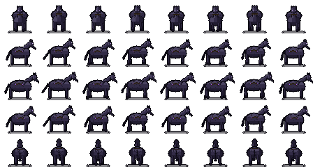
Rig proof — the actual 32×40 wanderer composited at each frame's saddleAnchor (walk f2). The cloak hem seats on the drift-trimmed saddle across all five facings.
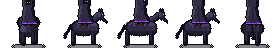
64×32 diamond, diamond-center anchored (32,16), packed-earth bed + worn cobble center line + dithered ruts, soft edges blending into ground. 6 canonical pieces keyed by a 4-neighbour bitmask (engine rotates/mirrors) + a drift-eaten road_broken.
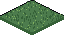
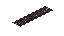
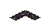
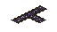
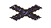
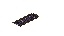
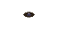
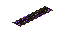
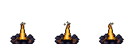
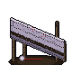
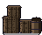
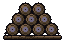
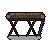
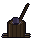
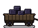
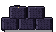
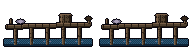
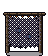
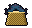
drift_monolith ships a full dirt apron pad inside its own canvas — no clipped south foundation.
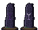
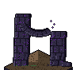
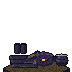
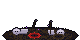
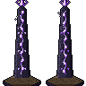